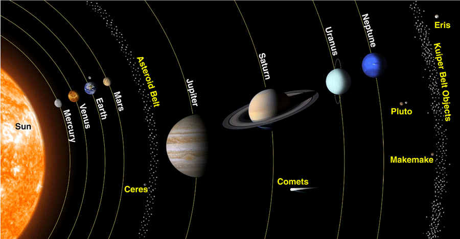

Mars is the fourth planet from the Sun and the second-smallest planet in the Solar System, larger only than Mercury. In the English language, Mars is named for the Roman god of war. Mars is a terrestrial planet with a thin atmosphere and has a crust primarily composed of elements similar to Earth's crust, as well as a core made of iron and nickel. Mars has surface features such as impact craters, valleys, dunes, and polar ice caps. Mars has two small, irregularly shaped moons, Phobos and Deimos.

Mars can be viewed from Earth with the naked eye, as can its reddish coloring. This appearance, due to the iron oxide prevalent on its surface, has led to Mars often being called the Red Planet. It is among the brightest objects in Earth's sky, with an apparent magnitude that reaches −2.94, comparable to that of Jupiter and surpassed only by Venus, the Moon and the Sun. Mars has been observed since ancient times. Over the millennia it has been featured in culture and the arts in ways that have reflected humanity's growing knowledge of it.